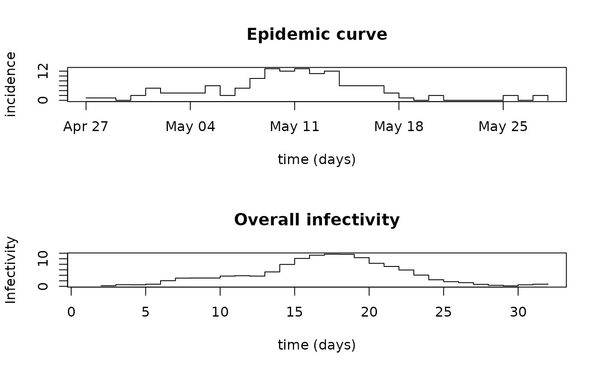

R/overall_infectivity.R
overall_infectivity.Rdoverall_infectivity computes the overall infectivity due to previously
infected individuals.
overall_infectivity(incid, si_distr)One of the following
A vector (or a dataframe with a single column) of non-negative integers containing an incidence time series
A dataframe of non-negative integers with two columns, so
that incid$local contains the incidence of cases due to local
transmission and incid$imported contains the incidence of imported
cases (with incid$local + incid$imported the total incidence).
Note that the cases from the first time step are always all assumed to be imported cases.
Vector of probabilities giving the discrete distribution of the serial interval.
A vector which contains the overall infectivity \(\lambda_t\) at each time step
The overall infectivity \(\lambda_t\) at time step \(t\) is
equal to the sum of the previously infected individuals (given by the
incidence vector \(I\), with I = incid$local + incid$imported if
\(I\) is a matrix), weigthed by their infectivity at time \(t\) (given by
the discrete serial interval distribution \(w_k\)). In mathematical terms:
\(\lambda_t = \sum_{k=1}^{t-1}I_{t-k}w_k\)
Cori, A. et al. A new framework and software to estimate time-varying reproduction numbers during epidemics (AJE 2013).
## load data on pandemic flu in a school in 2009
data("Flu2009")
## compute overall infectivity
lambda <- overall_infectivity(Flu2009$incidence, Flu2009$si_distr)
par(mfrow=c(2,1))
plot(Flu2009$incidence, type = "s", xlab = "time (days)", ylab = "incidence")
title(main = "Epidemic curve")
plot(lambda, type = "s", xlab = "time (days)", ylab = "Infectivity")
title(main = "Overall infectivity")
